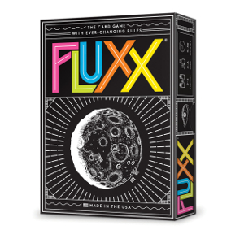

Intro to Flux
A brief history of nearly everything*
Created by Travis Swicegood / @tswicegood
*For very small values of nearly everything
What is Flux?
A Card Game?
No!
A Capacitor?
No!
A Framework?
No!
Flux is an Architectural Pattern
Data Flows One Direction
Not Like This
Like This
Actions ➔ Dispatchers ➔ Stores ➔ Views ➔ ∞
Actions
Dispatchers
Stores
Views
Show Me The Code!
There isn't any!
Or is there?
$ npm install flux
flux@2.1.1 node_modules/flux
├── fbemitter@2.0.0
├── immutable@3.7.5
└── fbjs@0.1.0-alpha.7 (whatwg-fetch@0.9.0, core-js@1.1.4, promise@7.0.4)
var Dispatcher = require("flux").Dispatcher;
var userDispatcher = new Dispatcher();
userDispatcher.dispatch({
actionType: "user-name",
name: "Travis Swicegod"
});
// Fake "store"
var User = {first: null, last: null};
userDispatcher.register(function(payload) {
if (payload.actionType === "user-change") {
var nameParts = payload.name.split(" ");
User.first = nameParts[0];
User.last = nameParts[1];
}
});
var token = userDispatcher.register(function(payload) { });
// later on, remove it
userDispatcher.unregister(token);
var nameToken = userDispatcher.register(function(payload) {
if (payload.actionType === "name-update") {
var nameParts = payload.name.split(" ");
User.first = nameParts[0];
User.last = nameParts[1];
}
});
var salutationToken = userDispatcher.register(function(payload) {
if (payload.actionType === "name-update") {
userDispatcher.waitFor([nameToken]);
User.salutation = "Dear " + User.first + " " + User.last;
}
});
Stores and Views
Questions
- My Blog
- My GitHub
- My Twitter